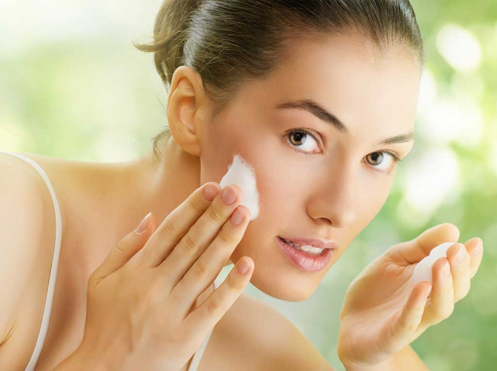
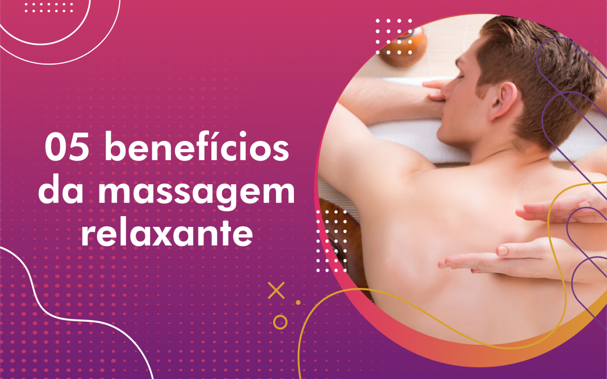

Dicas para Manter a Pele Jovem e Saudável
Manter a pele jovem e saudável requer uma combinação de cuidados diários, boa alimentação e procedimentos estéticos regulares. Neste post, vamos explorar as melhores práticas para cuidar da sua pele e alcançar uma aparência radiante.
Autor: Enzo Avilla Ries
Data e Hora: 05/08/2024, 10:00
Benefícios da Massagem Terapêutica para o Bem-Estar
A massagem terapêutica oferece vários benefícios para o corpo e a mente. Neste artigo, discutiremos como a massagem pode ajudar a aliviar o estresse, melhorar a circulação e promover o bem-estar geral.
Autor: Leticia Pedroso
Data e Hora: 12/08/2024, 15:00